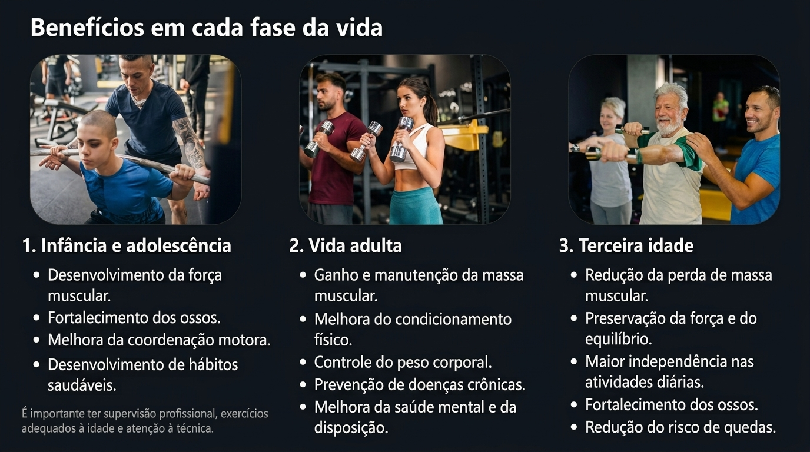

Porque devo começar a treinar?
Você deve começar a treinar porque cuidar do seu corpo é também cuidar da sua saúde, do seu bem-estar e da sua qualidade de vida. A prática regular de exercícios físicos ajuda a prevenir doenças, fortalecer os músculos, melhorar o condicionamento físico e proporcionar mais disposição para enfrentar a rotina.
Além dos benefícios físicos, treinar também contribui para a saúde mental, ajudando a aliviar o estresse, melhorar o humor, aumentar a autoestima e proporcionar noites de sono melhores.
Não importa se seu objetivo é ganhar massa muscular, perder gordura, melhorar sua aparência ou simplesmente ter uma vida mais saudável. O importante é dar o primeiro passo, respeitar seus limites e manter a consistência.
Quais são os benefícios de começar a treinar?
Começar a treinar traz benefícios que vão muito além da estética. A prática regular de exercícios físicos contribui para a saúde do corpo e da mente, melhora a qualidade de vida e ajuda a desenvolver hábitos mais saudáveis.
- Ganho de massa muscular: estimula o crescimento e o fortalecimento dos músculos.
- Perda de gordura corporal: aumenta o gasto energético e, junto a uma alimentação equilibrada, ajuda a reduzir a gordura corporal.
- Melhora do condicionamento físico: aumenta a resistência e facilita a realização das atividades do dia a dia.
- Fortalecimento dos ossos: exercícios de resistência ajudam a manter a saúde óssea e reduzir a perda de massa óssea.
- Saúde cardiovascular: contribui para melhorar a circulação sanguínea e controlar a pressão arterial.
- Melhora da saúde mental: ajuda a reduzir o estresse, aliviar sintomas de ansiedade e melhorar o humor.
- Qualidade do sono: pode facilitar o sono e contribuir para noites mais tranquilas.
- Aumento da autoestima: alcançar objetivos e perceber a própria evolução pode melhorar a confiança.
- Mais disposição: melhora a capacidade física e pode proporcionar mais energia para as tarefas cotidianas.
- Prevenção de doenças: ajuda a reduzir o risco de doenças crônicas, como diabetes tipo 2 e doenças cardiovasculares.
Conclusão
Começar a treinar é um investimento na sua saúde e no seu futuro. Não é necessário começar com treinos intensos ou grandes objetivos. A constância, o respeito aos limites do corpo e a evolução gradual são os principais caminhos para alcançar resultados duradouros.
A importância da musculação em todas as idades
A musculação é uma atividade física importante em todas as fases da vida. Muito além da estética e do ganho de massa muscular, ela contribui para a saúde, a qualidade de vida, a autonomia e o bem-estar físico e mental.
Quando praticada de maneira adequada e respeitando os limites de cada pessoa, pode trazer benefícios desde a infância e adolescência até a terceira idade.

Por que a musculação é tão importante?
Com o passar dos anos, nosso corpo sofre mudanças naturais, como a redução gradual da massa muscular e da força. A musculação ajuda a combater esses efeitos, preservando a capacidade de realizar atividades cotidianas e mantendo a independência por mais tempo.
Além disso, o treinamento de força pode contribuir para a prevenção e o controle de condições como diabetes tipo 2, hipertensão e osteoporose.
Conclusão
A musculação não tem idade para começar! Seja para desenvolver músculos na juventude, manter a saúde na vida adulta ou preservar a autonomia na terceira idade, o treinamento de força é um grande aliado da qualidade de vida.
O segredo está em respeitar as particularidades de cada fase da vida, contar com orientação profissional e manter a regularidade.
Saiba mais
- Organização Mundial da Saúde (OMS)
- Centers for Disease Control and Prevention (CDC)
- American College of Sports Medicine (ACSM)
Quer saber mais sobre a importância da atividade física?